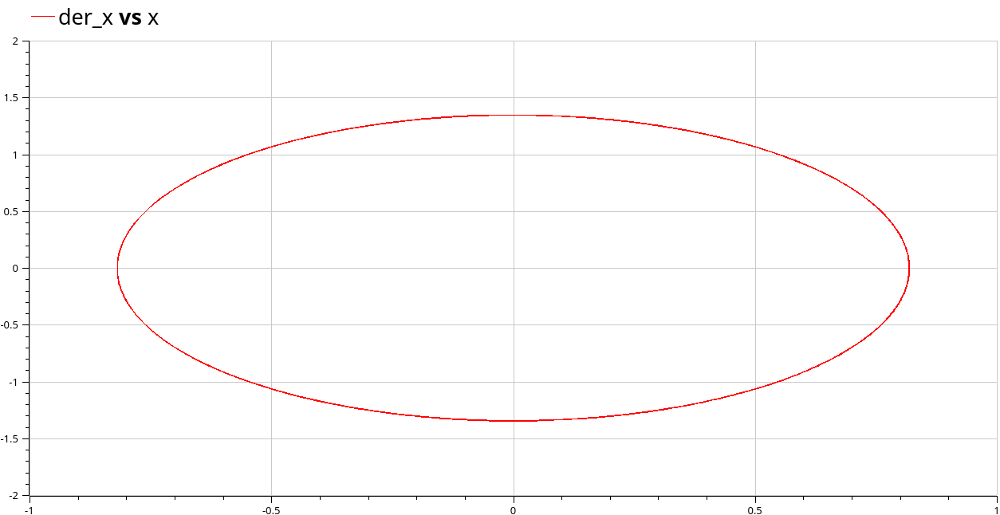
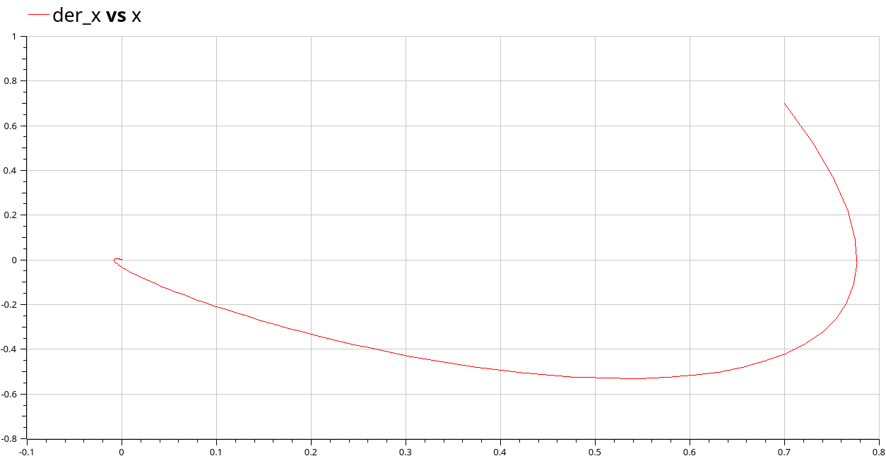

Вариант № 52
Построить фазовый портрет гармонического осциллятора и решение уравнения гармонического осциллятора для следующих случаев:
Колебания гармонического осциллятора без затуханий и без действий внешней силы
Колебания гармонического осциллятора c затуханием и без действий внешней силы
Колебания гармонического осциллятора c затуханием и под действием внешней силы
На интервалеx t ∈ [0; 47] (шаг 0.05) с начальными условиями x0 = 0.7, y0 = 0.7
Уравнение свободных колебаний гармонического осциллятора имеет следующий вид:
$$ \ddot{x} + 2\gamma \dot{x} + \omega^2x = 0$$
Уравнение колебаний гармонического осциллятора без затуханий и без действий внешней силы имеет следующий вид:
$$ \ddot{x} + \omega^2x = 0$$
На рисунке [-@fig:001] изображен соответствующий график:

2) Моделирование в `Julia`:
using DifferentialEquations, Plots;
function model1(u, p, t)
x, y = u
a, b, c, h = p
dx = -a*x - b*y + abs(sin(t+1))
dy = -c*x - h*y + abs(cos(t+2))
return [dx, dy]
end
u0 = [222000, 229000]
# a,b,c,h
params_1 = [0.223, 0.774, 0.665, 0.332]
t = (0, 1)
prob1 = ODEProblem(model1, u0, t, params_1)
sol_1 = solve(prob1)На рисунке [-@fig:002] изображен соответствующий график:
Базовая модель боевых действий с участием регулярных войск и
партизанских отрядов была промоделирована в OpenModelica и
Julia:
1) `OpenModelica`:model lab03_2 "2) Модель боевых действий между регулярными войсками с участием партизанских отрядов. Вариант 52."
parameter Real a=0.291; // константа, хар-я степень влияния различных факторов на потери
parameter Real b=0.865; // эффективность боевых действий армии у
parameter Real c=0.456; // эффективность боевых действий армии х
parameter Real h=0.789; // константа, характеризующая степень влияния различных факторов на потери
// Начальные условия
parameter Real x0=222000; // численность первой армии
parameter Real y0=229000; // численность второй армии
Real x(start=x0);
Real y(start=y0);
Real P;
Real Q;
equation
P = abs(sin(2*time));
Q = abs(cos(time));
der(x) = -a*x-b*y+P;
der(y) = -c*x*y-h*y+Q;
end lab03_2;На рисункax [-@fig:003] и [-@fig:004] изображены соответствующие графики:


2) `Julia`:using DifferentialEquations, Plots;
function model2(u, p, t)
x, y = u
a, b, c, h = p
dx = -a*x - b*y + abs(sin(2*t))
dy = -c*x*y - h*y + abs(cos(t))
return [dx, dy]
end
u0 = [222000, 229000]
# a,b,c,h
params_2 = [0.291, 0.865, 0.456, 0.789]
t = (0, 1)
prob2 = ODEProblem(model2, u0, t, params_2)
sol_2 = solve(prob2)
# на промежутке 1 мс
t_1 = [0, 0.001]
prob3 = ODEProblem(model2, u0, t_1, params_2)
sol_3 = solve(prob3)
plot(sol_3, label=["Армия X" "Армия Y"], xaxis="Время", yaxis="Численность", legend=:right)На рисункax [-@fig:005] и [-@fig:006] изображены соответствующие графики:


В резултьтате выполенения лабораторной работы познакомились с моделью боевых действий (модель Ланчестера) и попробовали смоделировать конкретные примеры.